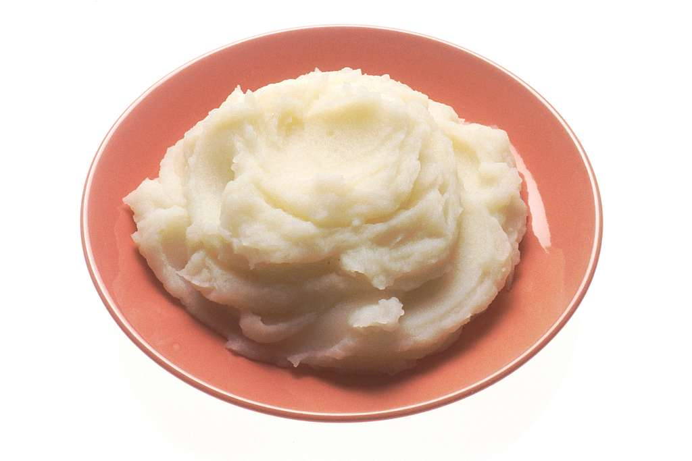

Best Mashed Potatoes

Description:
The best mashed potatoes are smooth, creamy, and buttery. This is my favorite mashed potato recipe that combines hot boiled potatoes with warm milk and melted butter
for light and fluffy results every time. A classic side for the holidays or weeknights!
Ingredients:
- 2 pounds baking potatoes, peeled and quartered2 pounds baking potatoes, peeled and quartered
- 3 cloves garlic, peeled, or to taste (Optional)
- 1 cup milk
- 2 tablespoons butter
- salt and ground black pepper to taste
Steps:
- Gather all ingredients.
- Bring a large pot of salted water to a boil. Add potatoes and garlic, lower heat to medium,
and simmer until potatoes are tender, about 15 minutes.
- When the potatoes are almost finished, heat milk and butter in a small saucepan over low heat until
butter is melted.
- Drain potatoes and return to the pot. Slowly add warm milk mixture, blending it in with a potato masher
or electric mixer until potatoes are smooth and creamy.
- Season with salt and pepper. Serve topped with extra butter and enjoy!
Back to homepage